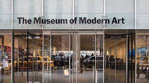

The Best Locations

Central Park
Central Park is one of the best places in New York, you can go running and cycling.
Statue of liberty
Of course when you think of Nyc you think about the statue of liberty. It's quite impressive going on the island and seeing it for the first time.

The MOMA
The Museum of Modern Art is one of the most famour museum of all time, it would be a shame to go to NYC and not visit it. It has paintings of Andy Wharol and other famous artits.

Food
One of the best parts of NYC is the food you have donuts, fast foods and diffent foods coming from all across the world.